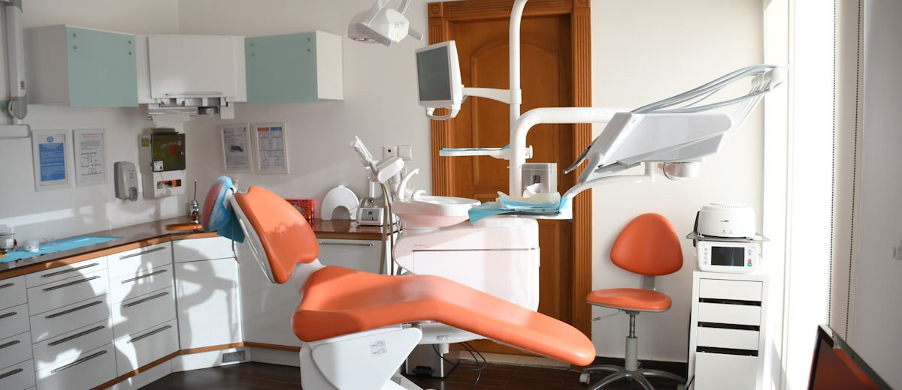

Turismo dental en Europa: dónde operarse los dientes, cuánto se ahorra y qué puede salir mal

El presupuesto llega por correo, lo lees dos veces pensando que hay un error y llamas a la clínica para confirmar. No hay error. Cuatro implantes y una carilla de porcelana: doce mil euros. Y mientras digieres el número, alguien en el trabajo te comenta que él se fue a Budapest y salió con todo hecho, vuelo incluido, por tres mil y pico. Ahí empieza la duda.
El turismo dental no es una moda ni un cuento. Es una industria consolidada que mueve millones de personas al año porque el diferencial de precios es real, los materiales suelen ser los mismos y los dentistas que trabajan en esas clínicas tienen títulos europeos homologados. Pero también hay clínicas que venden humo, tratamientos a medias y un número de teléfono que deja de coger a los tres meses. Esta guía te ayuda a distinguir unos de otros.
Los países que concentran el turismo dental europeo
No todos los destinos son iguales ni sirven para lo mismo. Estos son los cuatro más habituales para viajeros desde España y el resto de Europa occidental:
- Hungría (Budapest): la capital histórica del turismo dental europeo. Llevan treinta años especializados, el nivel técnico es alto y hay clínicas con décadas de reputación. Lo mejor para trabajos complejos y prótesis implantosoportadas. El vuelo desde España es directo y barato.
- Turquía (Estambul, Antalya, Izmir): precios aún más bajos y clínicas muy modernas, pero el mercado es más desigual. Hay joyas y hay trampas. Los paquetes all-inclusive están muy pulidos, pero hay que afinar más antes de elegir clínica.
- Polonia y República Checa: buena relación calidad-precio, dentistas con formación europea y menos masificación que Budapest. Opción más tranquila para quien prefiere un entorno más parecido al de casa.
- Albania (Tirana): el destino emergente. Precios de los más bajos de Europa, muchos dentistas formados en Italia o Alemania y vuelos directos creciendo. Aún falta consolidar la reputación, pero las primeras experiencias documentadas son buenas.
El ahorro real: con números, no con promesas
El margen varía según el tratamiento. A grandes rasgos, y comparando con precios medios de clínicas españolas:
- Implante unitario (corona incluida): 1.200–1.800 € en España · 400–700 € en Hungría o Turquía.
- Carilla de porcelana (por pieza): 700–1.200 € en España · 200–450 € fuera.
- Prótesis completa sobre implantes (All-on-4): 15.000–25.000 € en España · 5.000–10.000 € en el extranjero.
- Ortodoncia invisible (Invisalign o similar): 3.500–6.000 € en España · 1.500–3.000 € fuera, aunque aquí el seguimiento a distancia complica más las cosas.
Suma el vuelo, el hotel y los días libres. En tratamientos medianos ya ahorras. En trabajos grandes, el diferencial es tan brutal que cubre varias semanas de vacaciones.
El ahorro es real, pero depende de que el trabajo dure. Un implante que fracasa y hay que rehacer en casa sale más caro que haberlo hecho en España.
Lo que nadie te cuenta antes de reservar
Las clínicas de turismo dental tienen un incentivo claro: que pagues la señal, vengas y salgas contento. Pero hay cosas que no encajan bien con ese modelo y que conviene saber antes:
- Los implantes tardan meses. Un implante bien puesto necesita entre tres y seis meses de osteointegración antes de colocar la corona definitiva. Si la clínica te promete implantes y corona en una semana, o te coloca una provisional y luego envía la definitiva por correo, no es magia: es un atajo que tiene consecuencias.
- Las revisiones son tu problema. Si a los seis meses algo no va bien, viajar otra vez tiene un coste real. Pregunta antes qué protocolo tiene la clínica para pacientes internacionales y si tienen acuerdo con alguna red de clínicas en tu país para las revisiones de rutina.
- Los materiales no siempre son los mismos. La cerámica de calidad, los implantes de marcas premium (Nobel Biocare, Straumann, Osstem) y los materiales de las coronas varían mucho. Pide siempre el nombre y la marca de cada material antes de firmar nada.
- El número de sesiones importa. Un trabajo hecho con prisa —abrasando la encía, sin tiempo de cicatrizar entre fases— puede fallar aunque los materiales sean buenos. Un buen plan de tratamiento a distancia debería incluir cuántas visitas y con qué espaciado.
Cómo elegir la clínica sin equivocarte
No hace falta saber de odontología para filtrar el 80% de los problemas. Hace falta hacer las preguntas que una clínica seria responde sin dudar:
- Nombre y colegiación del dentista que te va a tratar. Que sea una persona concreta, no "nuestro equipo".
- Plan de tratamiento por escrito antes de pagar la señal. Fases, materiales, marcas, número de sesiones y precio total con todo incluido.
- Garantía real y condiciones. Qué cubre, por cuánto tiempo y qué pasa si algo falla cuando ya estás en casa.
- Protocolo para pacientes internacionales. ¿Tienen dentista de referencia en tu ciudad para urgencias? ¿Cómo resuelven los imprevistos a distancia?
- Reseñas de pacientes a 12 meses, no del día de salir de la clínica. Los problemas dentales suelen aparecer después.
Para una lista de comprobación más completa que sirve para cualquier tipo de tratamiento fuera de tu país, lee nuestra guía sobre cómo elegir clínica de turismo médico sin llevarte un susto.
El checklist antes de viajar
- Radiografía panorámica reciente (OPG) enviada a la clínica para valoración previa.
- Plan de tratamiento recibido y revisado antes de reservar el vuelo.
- Marcas de implantes y materiales de las coronas confirmadas por escrito.
- Número de sesiones y días mínimos necesarios en destino.
- Protocolo de seguimiento para cuando estés en casa.
- Garantía documentada y condiciones claras.
- Seguro de viaje que cubra complicaciones médicas en el país de destino.
- Alojamiento flexible (no vuelo de vuelta inamovible el día siguiente de una extracción).
Banderas rojas que deberían hacerte cancelar
- Te dan presupuesto sin ver ninguna radiografía.
- El precio cambia cuando ya estás allí: "hacía falta más trabajo del previsto".
- No hay contrato ni plan por escrito, solo una conversación de WhatsApp.
- Prometen implante y corona definitiva en una sola visita corta.
- No puedes hablar con el dentista que te va a tratar antes de viajar.
- Las reseñas son todas del mismo mes y con el mismo tono.
- No tienen protocolo claro para complicaciones una vez en tu país.
Preguntas rápidas
- ¿Los implantes del extranjero duran igual? Sí, si los materiales son los mismos y el protocolo es correcto. El fracaso no depende del país, depende del proceso.
- ¿Puedo reclamar si algo sale mal? Dentro de la UE tienes derechos como paciente que aplican también en otro Estado miembro. Fuera de la UE (Turquía, Albania), dependes del contrato y de la voluntad de la clínica.
- ¿Cuántos días tengo que quedarme? Depende del tratamiento. Para extracciones e implantes en fase de osteointegración, a veces basta con 2–3 días y volver meses después para la corona. Para trabajos complejos de prótesis completa, cuenta con una semana o más.
- ¿Mi dentista de aquí puede darme seguimiento? Puede, pero no siempre quiere hacerse responsable de trabajo que no ha hecho él. Vale la pena preguntarle antes de viajar.
- ¿El seguro médico cubre si algo sale mal? El seguro de viaje estándar no suele cubrir complicaciones de tratamientos planificados. Existe seguro específico para turismo médico; merece la pena mirarlo para tratamientos grandes.